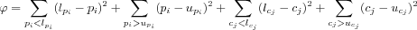
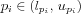
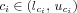
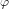
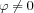

The genetic algorithm with stochastic ranking is very similar to the before described with tournament selection. With two exception which are the mutations are not forced to be within the boundaries and the selection is done through a bubble sort with a random factor as described in [
Runarsson00].
- Parameters are encoded in genes using floating-point representation, rather than the more usual binary representation.
- Mutation is carried out by adding to the gene a random number drawn from a normal distribution with zero mean and a standard deviation of 10% of the parameter value. Parameters may exceed boundaries. Whenever this happens or a constraint to the solution is violated the square of the size of the violation is summed up, i.e., we calculate
u_{p_{i}}}(p_{i}-u_{p_{i}})^{2} + \sum_{c_{j}u_{c_{j}}}(c_{j}-u_{c_{j}})^{2}$">
where the parameters are given by  and the constraints by  The value  is used within the selection.
- Cross-over is always performed at gene boundaries so that no gene is ever disrupted. The number of cross-over points is a random number between zero and half the number of adjustable parameters (uniform distribution).
- Selection is done by the bubble sort described in [Runarsson00]. This sort incorporates a probability to compare objective values for individuals with a . The pseudo code for the sort is:
// Here sweepNum is optimal number of sweeps from paper, i.e., TotalPopulation
for (i = 0; i < sweepNum; i++)
{
wasSwapped = false;
for (j = 0; j < TotalPopulation - 1; j++)
{
// within bounds or random chance
if ((phi(j) == 0 and phi(j + 1) == 0) or UniformRandom(0, 1) < Pf)
{
// compare objective function values
if (Value(j) > Value(j + 1))
{
swap(j, j + 1);
wasSwapped = true;
}
}
else // phi != 0
{
// individual j further outside then j + 1
if (phi(j) > phi(j + 1))
{
swap(j, j + 1);
wasSwapped = true;
}
}
}
// if no swap then break
if (wasSwapped == false) break;
}
- The initial population contains one individual whose genes are the initial parameter values, the genes of all other individuals are initialized to a random value between their boundaries. If the boundaries span two orders of magnitude or more, the random distribution is exponential, otherwise normal.
- Whenever the fittest individual has not changed for the last 10 generations, the 10% less fit individuals are replaced by individuals with random genes. When the fittest individual has not changed for 30 generations, the worse 30% are substituted by individuals with random genes. When the fittest individual has not changed for 50 generations, the worse 50% are substituted by individuals with random genes. This procedure helps the algorithm escape local minima and is somewhat equivalent to increasing the mutation rate when the population has become uniform.
Options for Genetic Algorithm SR
- Number of Generations
- The parameter is a positive integer value to determine the number of generations the algorithm shall evolve the population. The default is '200'.
- Population Size
- The parameter is a positive integer value to determine the size of the population, i.e., the number of individuals that survive after each generation. The default is '20'.
- Random Number Generator
- The parameter is an enumeration value to determine which random number generator this method shall use. COPASI provides two random number generators R250 [Maier91] (selected through the value 0) and the Mersenne Twister [Matsumoto98] (selected through the value 1 (default)).
- Seed
- The parameter is a positive integer value to determine the seed for the random number generator. A value of zero instructs COPASI to select a "random" value.
- Pf
- This parameter is a numerical value in the interval (0, 1) determining the chance that individuals either outside the parameter boundaries or violating the constraints are compared during the selection. The default is '0.475'.